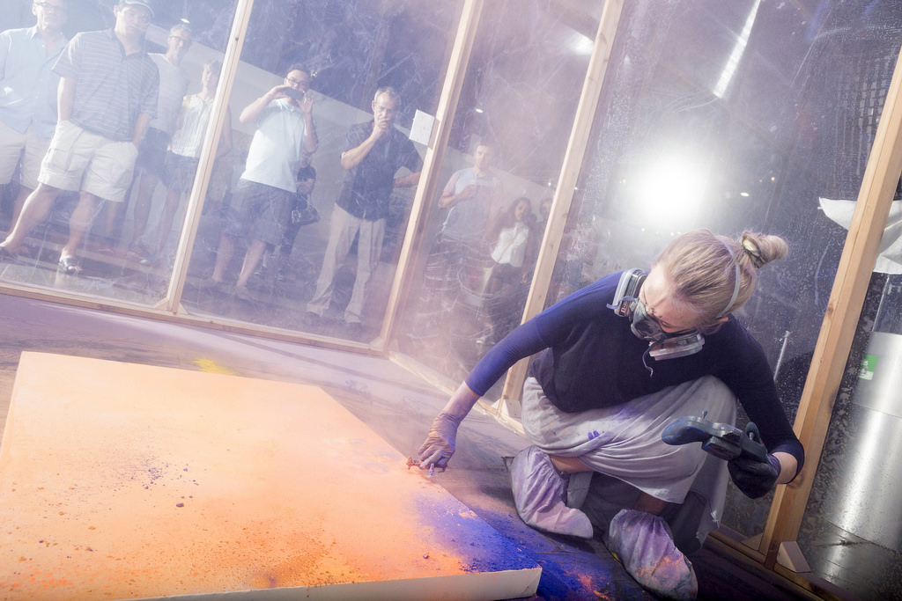

Artist, Researcher
Addie Wagenknecht is an artist and researcher exploring the tension between human expression and technology. Her work is concept driven, and tends to mix forms of hacking with sculpture—notable pieces include Black Hawk Paint, a series of paintings made with drones, and Asymmetric Love, a chandelier made of CCTV cameras that surveilled onlookers. Her material often draws on feminist theory, new media, and open-source practices. Her work has been featured in exhibitions around the world, and in publications such as TIME, The New York Times, and Vanity Fair. She is represented by bitforms gallery in NYC.
How do you take a nebulous idea and turn it into something real?
My ideas usually start by seeing something that just resonates. It might be a color, it might be a specific type of fabric, or something else that just sticks with me.
A good example would be the pigments I use with my Black Hawk drone paintings. I probably first saw these pigments 10 or 11 years ago. I was in India, and I just happened to get there at the start of Holi—a giant, citywide pigment-throwing festival. Experiencing these really vivid colors, and seeing the impressions and the contrast they left on different areas after they’d been used, was something that I wanted to experiment with in my own work. I started thinking about how I might translate those pigments into something on canvas,something archival, and kept thinking about what it might mean to use pigments with technology or with drones…
I kept asking myself all these questions. In this way, the ideas start and they just keep snowballing.

The artist working on her Black Hawk drone paintings in 2007.
Liberator Rounds (2015)
Asymmetric Love, 2013
What has been the biggest risk you’ve taken as an artist?I tend to wake up and exercise (if I want to). In the morning, I try to do whatever it is I need to do that day for myself—like errands or writing—before I check my email. I find that once I check my email, the rest of the day becomes about other people’s needs. I used to always check my email first thing in the morning, but then I would spend like six hours emailing, and I would never get to my own projects. I actually got the idea from Anna Wintour, of all people. I couldn’t believe I had never thought about it, and now it seems so obvious. It’s the same with social media—I’ll check it while I’m drinking my coffee in the morning. Then, when my coffee’s done, the social media’s done, too. Otherwise it just ends up eating my whole day.
Has there ever been a time where you had to shut down a project or stop working with someone because it wasn’t working out? Have you ever felt like you failed? I think I fail, like, every day. But there have definitely been things where I thought they failed tremendously, and then for whatever reason someone sees it and understands it. Sometimes it’s years later. I don’t mean to bring this up again, but my drone paintings are an interesting example of that. When I made them initially, it was because I wanted to try action painting in a way that didn’t utilize brushes. After I made them, people were like, “that’s really funny,” or “yeah that’s totally a good idea,” but after that the interest died out. Then, five or six years later, people started rediscovering the stuff and thought it was fascinating.Detail of finished drone painting
Yeah, it’s about being in the right moment for the right ideas. And if it’s not the right time, then yes, things can fail tremendously. But in general, I’m constantly failing, so I don’t really use that as a metric. I make the work I make because I need to express something, or because I have an interest in researching something. Then once it’s out there, it’s just out there.
In that case, what does success look like to you?That’s like asking what is happiness, right? I used to think there were these concrete metrics for everyone, like having a really nice car and a big house. That whole cookie-cutter idea is very prevalent, especially with the whole Kardashian scene (which I love, by the way) where you just hang out and have this house and really nice clothes and everything’s amazing, right? But it’s interesting—when I was growing up, my mom was a financial advisor, and she worked at one of the big brokerage firms. I think her clients had to have some ridiculous minimum income, like $15 million or something. She always would tell me, “the most miserable people I know are always the wealthiest.”
This idea has stuck with me because so often, it’s the truth. It’s not necessarily true for everyone, but I do know a lot of people who were successful very young, and they’ve built these ivory towers to try to protect themselves from everything. They just seem to live in fear of other people, in this state of mistrust, isolation, and unhappiness. So I think of “success” in terms of having really good people around me—people who are authentic in the sense that I can show up at their door in a total mess, broke and upset—and they just take me in. Having these no-bullshit relationships, and building that authentic sense of community, is really my metric for success. Plus, being able to do what I want in terms of traveling, hanging out with my dog, and other small things that I wouldn’t have equated happiness or success with initially. These things are what help me feel like a successful, whole person.
I quit, documentation print from performance
I’m super type A, super anxious, and I set super high expectations for myself. But I can also go outside in my pajamas to get a coffee, zero fucks given. It just depends on the situation—sometimes everything has to be perfect and practiced, and I need a blowout and my clothes need to be clean. I guess it’s about figuring out what hills you want to die on, or what’s important and what’s not. Does anyone actually care if I walk my dog in my sweatpants? No.
It’s really about knowing what matters to me, and trying to be as honest as I can with the people in my life. It’s also about realizing that nothing’s ever perfect, and I’m going to mess up. Everyone’s going to have bad days. It’s just part of what makes living life real and interesting.
When there’s something big I want to have happen, I tend to have it on a list—or at least I have it in my mind—and then I keep chipping away at it. So if I’m trying to get from A to B, I’ll think about it in terms of getting to “B and a half.” I like to visualize things in micro steps. And if it’s something that a billion other people that have done before me, I’ll look and see, what does their CV say? What exhibitions have they been in? Who have they shown with? What collections are they in? Looking into these things will give you hints of possible trajectories you could take, and possible approaches.
What are you most excited about doing next?I spent the last month or so visiting family in the States, so I’m really just excited to start working again. Not working for a while makes me crave it more, so producing new things is what I’m really excited about right now. I’m also excited about going on vacation somewhere. Eventually.
Adapted from